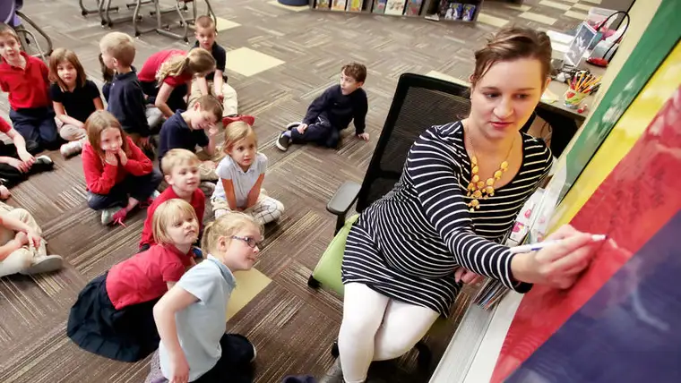

{kind=link}
FARGO – The little boy had been having quite a time of it, and in the process of those emotional growing pains, he’d earned the nickname, “A-man.”
“It’s kind of like ‘Amen,’ ” he’d said happily one day, within earshot of many.
When the gleeful pronouncement reached Elysia Libbrecht, his school counselor, her heart leapt. “I thought, ‘Oh, there is so much we could do with that,’ ” she recalls.
But she knew that in the public school setting, such conversations have limits. “That was the moment when I realized, ‘OK, I think I know where I need to be.’ ”
Last year, Libbrecht accepted a position as a counselor at Oak Grove Lutheran Elementary School and says it was everything she’d hoped for.
“It opened up a whole new world when I was able to talk about Christ and help fulfill that spiritual aspect,” she says.
Now at Trinity Elementary, a new Catholic school in West Fargo that her oldest daughter attends, Libbrecht says she loves working with the Catholic schools network’s mission of helping develop the whole person – body, mind and soul.
“When children are feeling sad, angry or anxious, I love to teach them my favorite prayer, which is simply, ‘Jesus, I trust in you.’ ” she says. “Coupled with deep breaths, this quick prayer works in many situations as a tool to calm down.”
One first-grader recently came up with his own version, she says: “Jesus, I don’t want to do this right now, but I’ll do it for you.”
“I love watching the transformation of their prayers from something scripted, to a conversation they can have with Christ,” she says. “As a Christian school counselor, I can tell them they can also talk directly to Christ … because even when we feel like we don’t have control, he always does.”
Teri Kroll, who slipped into Libbrecht’s former spot at Oak Grove Elementary, spent 18 years in Boise, Idaho, where she worked mostly as a school counselor at an art-based, private school.
Despite the fact that the school wasn’t faith-based, she says, talking about faith in her work as a counselor seemed natural in the predominantly Mormon community.
Now Kroll, who is Lutheran, says she’s thrilled to take that a step further in an environment specifically set up for infusing faith into the curriculum.
“Since it’s smaller and Christ-based, we have the opportunity to know our families better, and they expect us to know their kids. It’s not this hands-off approach,” she says. “We know the whole unit, and it’s neat to carry that forward.”
Kroll has found weekly chapel sessions with the students, who lead the prayers, “a solid, stabilizing part of our schedule – a real centering part of our day.”
“The world is scary sometimes,” she adds, “and it’s good for all of us to know God can support us through the hard stuff.”
Naomi Erkenbrack, a counselor at Valley Christian Counseling, worked for three years with students at Park Christian School in Moorhead, where she says she gained important insight into what is possible in the parochial setting.
“Faith really gets to the core of the child’s issues,” she says. “If you can incorporate their faith, you’re anchoring them to something solid, and you’re able to go deeper even within a limited time constraint.”
During her time at the school, Erkenbrack helped students discover faith as a valuable coping mechanism. “Often, if they were struggling with a thought or a memory or a relationship conflict, we’d ‘put Jesus into the picture’ to see what he might say about it.”
The technique helped ease defensiveness while still validating the students’ feelings, Erkenbrack says.
Sharing written Scripture passages matched to the students’ strengths also proved invaluable, she says. “Our students get taken down so much in our world, so how can we use these words of life to build them up so they can build others up?”
As chaplain at Sullivan Middle and Shanley High schools, the Rev. Charles La Croix walks closely with students spiritually through their whole junior high and high school journey.
“We’ve had our fair share of trials and challenge – from illnesses to deaths in the family,” he says, “but through faith, students have been able to grieve properly and arrive at a level of peace and move forward.”
While this is helpful on an individual basis, he says, incorporating faith in a communal way also brings tremendous benefit. “We can go through these times of testing together, to discuss things with each other and talk about God, and we can counsel and console one another with the help of God.”
La Croix says few things are more gratifying than helping someone going through a difficult moment to arrive at a place of peace and face the future with hope. But just as much, he’s been blessed by watching the students ministering to each other.
“We set the course of action, but it’s really the students who are able to experience that in a collective way, to pray for one another without any prompting,” he says. “I feel blessed I’m able to experience that here in our faith community.”
[For the sake of having a repository for my newspaper columns and articles, I reprint them here, with permission, a week after their run date. The preceding ran in The Forum newspaper on Nov. 28, 2015.]